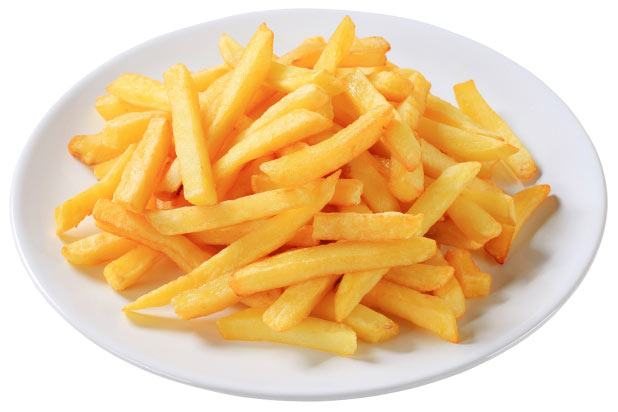
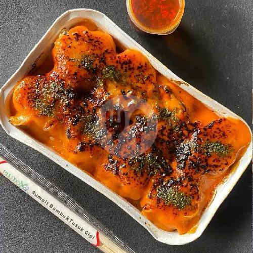
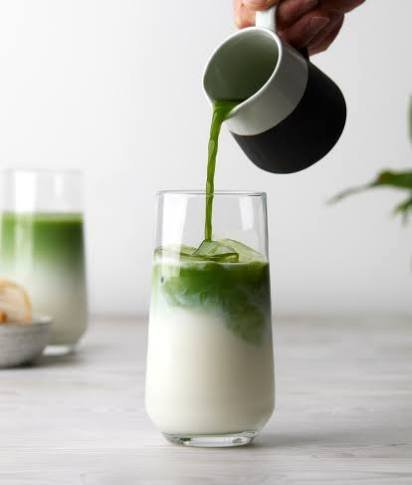

Kopi Espresso

Harga: Rp 25.000
Espresso adalah minuman kopi pekat yang dibuat dengan cara mengalirkan air panas bertekanan tinggi melalui bubuk kopi yang digiling sangat halus. Proses cepat ini menghasilkan satu shot berukuran 25–30 ml yang memiliki lapisan busa keemasan di atasnya atau disebut crema Pesan Sekarang
Nasi Goreng chicken katsu

Harga: Rp 35.000
Nasi goreng chicken katsu adalah hidangan inovatif perpaduan kuliner Indonesia dan Jepang, yang terdiri dari nasi goreng gurih disajikan bersama chicken katsu—yakni potongan daging ayam tanpa tulang yang dibalut tepung panir lalu digoreng renyah keemasan Pesan Sekarang
Kentang Goreng

Harga: Rp 15.000
Kentang goreng adalah hidangan berupa potongan kentang berbentuk memanjang yang dimasak dengan cara digoreng di dalam minyak panas. Makanan ini memiliki tekstur renyah di luar dan lembut di dalam, serta sering disajikan sebagai camilan atau hidangan pendamping Pesan Sekarang
Dinsum Mentai

Harga: Rp 15.000
Dimsum mentai adalah menu fusion populer berupa siomay dimsum kukus atau goreng isi ayam dan udang, yang disiram saus mentai creamy di atasnya, lalu dibakar (torch) hingga beraroma smoky dan diberi taburan nori. Pesan Sekarang
Matcha Latte

Harga: Rp 22.000
Matcha latte adalah minuman berbahan dasar bubuk teh hijau khas Jepang (matcha) yang dicampur dengan susu. Minuman ini memiliki tekstur yang lembut dan creamy dengan cita rasa khas yang memadukan rasa sedikit pahit (earthy), gurih (umami), dan manis Pesan Sekarang
Nasi Uduk

Harga: Rp 30.000
Nasi uduk adalah hidangan tradisional khas Betawi berupa nasi gurih yang dimasak dari beras, santan, dan rempah-rempah. Hidangan ini sangat populer sebagai menu sarapan di Indonesia Pesan Sekarang